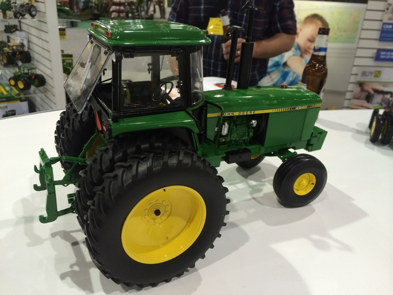
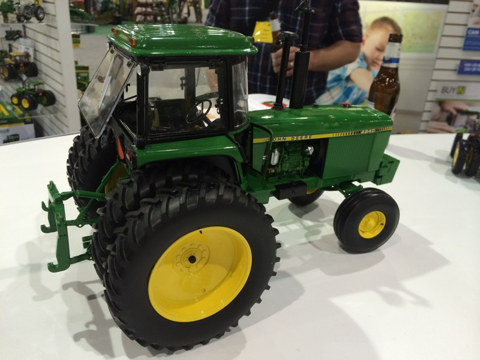

The John Deere 4840 was the largest of the John Deere row crop tractors during its production from 1978 to 1982. It was rated at 180 horse power and sold for approximately $60,000 when new.
The 4840 Precision features dual rear wheels, front weights and movable three point hitch and quick hitch. Lights are activated by touching the cab. Ertl stock number 45464.
